Foi um dia divertido para os nossos amigos. Fizeram uma porção de coisas na fazenda. Mas do que as crianças gostaram mesmo foi da viagem em carro de boi. Durante várias horas passearam lentamente pelos longos caminhos, ouvindo o melancólico ranger das rodas. Quem não ficou muito satisfeito foi o Arrelia. E isto porque havia trabalhado de carreiro o tempo todo.
- Arre! – queixou-se ele, sentando-se nos degraus da casa logo após o jantar. Estou que não aguento mais! Puxei os bois a tarde inteira! Que destino amargo!
Um dos homens vinha chegando e ouviu as últimas palavras do Arrelia. Estendeu-lhe a mão e disse-lhe:
- Tome! Isto vai adoçar o seu destino amargo.
- O que é isso? – espantou-se o Arrelia, olhando para a mão do recém-chegado.
- O que podia ser? Rapadura, ué! Não gosta?
- Rapadura? Se gosto! É uma das melhores coisas da “viuda”! Dê-me aqui! – e estendeu as duas mãos.
As crianças, que até então tinham estado calmas, muito calmas, avançaram aos empurrões para o dono da rapadura, deixando o Arrelia com as mãos no ar. Não sobrou nada, Ao contrário, faltou. E não era um pedaço pequeno. O homem pediu a Iberê que fosse buscar mais. Ele foi e voltou com uma bela rapadura inteira. O homem cortou-a numa porção de pedaços e foi uma festa.
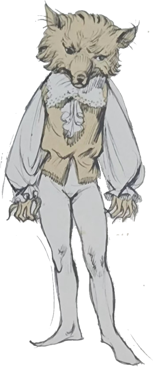
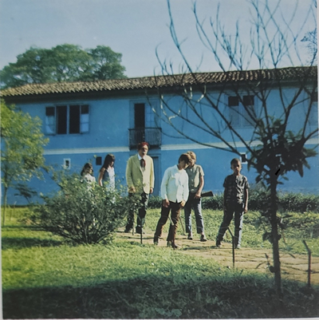
Foi um dia divertido para os nossos amigos. Fizeram uma porção de coisas na fazenda.
Anoitecia e o pessoal da fazenda já estava quase todo recolhido. Nhô Zico, assim se chamava o homem da rapadura, acendeu o seu pitinho de barro e pôs-se a contemplar os morros, que se iluminavam com as últimas luzes do Sol enquanto que as baixadas já estavam mergulhadas em sombras.
- Vamos ter uma noite bonita, não é, Nhô Zico? – comentou o Arrelia, admirando a beleza do crepúsculo. Hoje está bom para passar a noite fora. A gente podia combinar uma pescaria, hein?
As crianças animaram-se mas Nhô Zico ficou surpreso:
- Hoje? Nem brinque! Não sabe que dia é hoje?
O Arrelia pensou um pouco e respondeu:
- Claro que sei! É sexta-feira. E o que tem?
- O que tem? Já pensou? A noite de hoje não presta para a gente ficar fora. A pescaria vai sempre até à madrugada, e depois da meia-noite é fácil encontrar lobisomem. Vocês sabem como é que um homem se transforma em lobisomem? E por quê?
Antes que algum dos nossos amigos pudesse responder, Nhô Zico mesmo respondeu, sentando-se também na escada e colocando o pitinho no chão:
- Quando é sexta-feira, à meia-noite, ele procura uma encruzilhada, atira-se ao chão e começa a rolar na poeira. Logo se transforma em lobisomem. O lobisomem é o sétimo filho de um casal: o caçula. É fácil a gente saber quem é o lobisomem: o predestinado costuma ser amarelo e muito magro. Como ele precisa de sangue, depois que se transforma em lobisomem anda à cata de algum leitãozinho, cachorro novo e até criança de colo. Em último caso ataca mesmo gente grande. Antes de amanhecer, o lobisomem sempre procura um cemitério e lá consegue voltar à forma humana. Se nesta hora alguém consegue fazer um ferimento nele com um espinho especial, o encanto se quebra, e durante o tempo que viver o desencantador, ele não mais se transformará em bicho. O lobisomem faz lembrar um enorme cachorro e tem as unhas muito grandes. Hoje é um bom dia para a gente ver o danado. Basta esperar até à madrugada. Será que aqui tem alguém de coragem? Perigo não há porque a gente fica na janela.
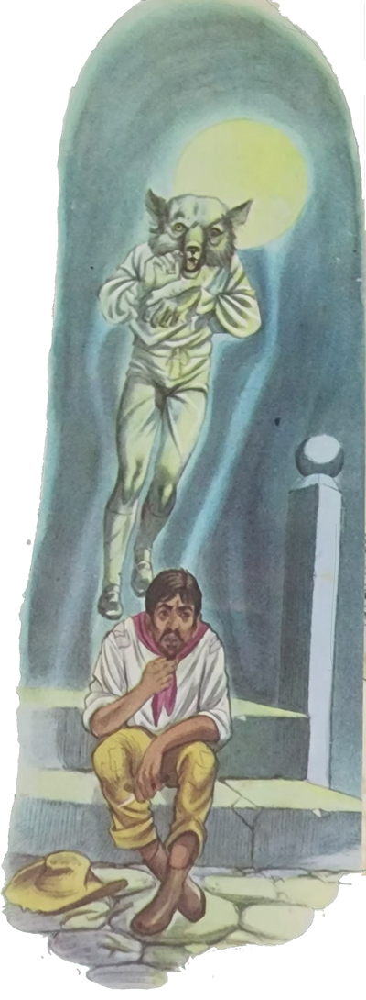
As crianças não deram uma resposta. O Arrelia quebrou o silêncio:
- Ora, coragem não falta. Só que a gente não acredita.
- Se o senhor quiser fazer-me companhia – disse o homem, com um ar caçoísta – ficaremos acordados até ele aparecer.
- Está certo! – respondeu o Arrelia. Não vejo por que não.
As crianças começaram a protestar, a implorar ao Arrelia que não fizesse aquilo. Foi pior. Ele ficou todo orgulhoso e disse que não lhe custava nada esperar até depois da meia-noite. Afinal não tinha sono e estava calor.
O homem continuou a falar no lobisomem:
- Não sei como tem gente que duvida. Olhem que já houve casos . . . Aqui mesmo aconteceu um. Foi com a Ritinha. Ela morava com sua mãe e um irmão lá pelas bandas do rio, logo depois da divisa da fazenda. Aqui, na fazenda, morava uma família de trabalhadores: um casal e sete filhos homens.
- Já estou adivinhando – interrompeu o Arrelia. O último era lobisomem, não é “verdaude”?
- E podia ser de outro jeito? O caçula só podia ser mesmo lobisomem. O que mais havia de ser?
Neste momento surgiu uma das moças da casa carregando uma bandeja cheia de pamonhas quentinhas. Que algazarra. As crianças quase derrubaram pela escada abaixo o Arrelia e o homem do lobisomem.
- Calma! Calma! – gritava a moça, surpresa pelo ataque. Tem pamonha para todos! Se estas não forem suficientes, trarei mais lá de dentro!
O Arrelia disse ao seu companheiro:
- Está vendo? Parece que estão morendo de fome. Lá na cidade não são assim. Nem ligam para comida.
- E o senhor quer comparar a comida da cidade com a daqui?
- Isso é “verdaude”. Nem tem comparação – disse o Arrelia enquanto ele e o outro recebiam diretamente da moça algumas pamonhas que haviam escapado ao ataque das crianças.
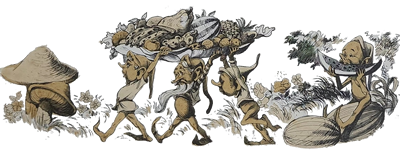
Após haver devorado várias pamonhas, o Arrelia exteriorizou sua opinião:
- Mas que delícia! Acho que vou querer mais!
- Espere um pouco que volto já, já – prometeu a moça e entrou na casa levando a bandeja vazia.
Ouviu-se a voz de Marisa:
- O que você está fazendo, Carlinhos? Isso não se come!
Todos procuraram ver o que o menino estava fazendo. O Arrelia até pulou:
- Não, Carlinhos. Não se come a palha! Só o recheio! Será possível! Que “camarauda”!
- Se ninguém me disse nada como é que eu ia saber?
O homem do lobisomem ficou admirando a cena em silêncio. Depois comentou em voz baixa, falando mais consigo do que com os outros:
- E dizem que a gente é caipira . . . Olhem esse daí: comer a palha do milho . . . Cada uma que acontece . . .
Com a volta da moça, trazendo mais pamonhas, a algazarra recomeçou e o episódio de Carlinhos foi esquecido.
Nhô Zico não aceitou mais. Para ele chegava. Meio espantado, não pode deixar de comentar:
- Não vão ficar doentes. Mesmo o que é bom, com exagero faz mal.
Por fim, deram-se por satisfeitos. Nhô Zico perguntou ao Arrelia:
- Diga-me uma coisa: vocês não haviam jantado, não é mesmo?
- Tínhamos “jantaudo”, como não? – surpreendeu-se o Arrelia. Por quê?
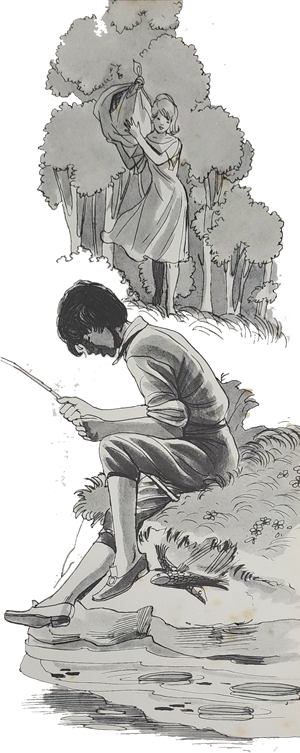
- Por nada, por nada – respondeu o outro, coçando a cabeça.
Como ele não havia desistido de falar cobre o lobisomem, aproveitou a calma que se fizera para dizer:
- Mas eu estava contando que a Ritinha Morava, não muito longe daqui, com sua mãe e o irmão. Viviam bem sossegados, felizes, Um dia apareceu lá por perto o caçula que morava aqui na fazenda. Tinha ido pescar. Chegou à beira do rio, sentou-se com toda tranquilidade e ficou à espera do peixe.
A Ritinha costumava lavar roupa bem perto daquele lugar. Por coincidência, ela chegou naquela hora e pôs-se a trabalhar. Não se conheciam e um não ligou para o outro: ele ocupado na pescaria; ela, a lavar roupa.
Ficaram ali um bom tempo. Aí uma trouxa de roupa para lavar caiu no rio. Instintivamente a Ritinha gritou. O Arlindo, este era o nome do moço, levou um susto! . . . Levantou-se, e logo compreendeu o que havia acontecido. Entrou no rio e conseguiu apanhar a trouxa. A Ritinha não sabia como agradecer. Ele disse-lhe que não tinha sido nada e procurou voltar ao lugar da pesca. A moça não concordou. Molhado daquele jeito? Não, senhor. Queria que ele fosse à casa dela. Sua mãe lhe emprestaria algumas roupas do irmão da Ritinha até que as dele ficassem secas.
Tanto ela insistiu que ele concordou. A mãe da Ritinha arranjou-lhe umas roupas do filho e tratou de acender o ferro de passar para secar as roupas do Arlindo. Enquanto esperava, o moço acomodou-se perto do fogão, pois havia começado a sentir uns arrepios.
- Vai ver que se resfriou! – disse a mãe da Ritinha, preparando para ele uma tigela de canjica bem quente.
Mais tarde, o moço, usando já as suas roupas, foi buscar os seus apetrechos de pesca e partiu de voltas à sua casa.
Passaram-se alguns dias, e ele tornou a pescar. Novamente encontrou a Ritinha e puseram-se a conversar. E assim começou o namoro. A mãe da moça veio até aqui saber quem era ele. Dissemos a verdade: moço bom, trabalhador, ajuizado. Só que ninguém tocou numa coisa: na desconfiança de que ele era lobisomem. Todo o mundo andava cochichando sobre isto mas faltavam provas.
O irmão da Ritinha estava viajando. Quando voltou e ficou conhecendo o Arlindo, teve logo as suas desconfianças. O rapaz era de uma cor amarela muito esquisita. Dirigiu-se à irmã:
- Olhe, você nunca desconfiou de nada?
- Ué, do quê?
- Que o seu namorado seja lobisomem?
- Que é isso? – apavorou-se a moça. Um rapaz tão bom! Por que você pensa assim?
- Por causa da cor dele. Tenho viajado muito e sei ver as coisas. A cor dele é cor de lobisomem!
O irmão da Ritinha procurou sua mãe e contou-lhe p que pensava. Pobre mulher. Que susto levou. Aí ele disse:
- Amanhã vou até a fazenda e pergunto a respeito. Tenho bons amigos lá e hão de me dizer a verdade.
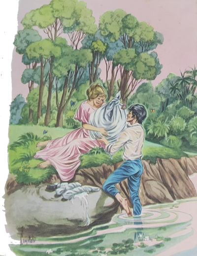
A Ritinha ficou preocupada:
- E se ele não for lobisomem e souber que desconfiamos dele? Vai ficar sentido, não vai?
- Não se incomode que saberei fazer a coisa.
No dia seguinte, o moço veio mesmo à fazenda em com muito jeito, começou a tirar informações do rapaz. Não foi fácil. Todos procuravam fugir do assunto. Quando já estava quase desistindo, encontrou um mocinho muito seu amigo e repetiu a pergunta.
O mocinho disse que realmente suspeitava do namorado da Ritinha. Nada havia sido provado, porém era o sétimo filho homem. E aquela cor amarela, então, o que significava?
O irmão da Ritinha voltou o mais depressa que pode e contou à mãe e à irmã o que tinha ouvido. Pediu à irmã que se afastasse do namorado.
- Mas isso não prova nada! – disse ela. Suspeitar apenas, não resolve.
- Bem, você é quem sabe – respondeu o irmão e deu o assunto por encerrado.
A Ritinha começou a observar o namorado com mais atenção e notou que de fato os seus modos eram esquisitos. Não resistiu e perguntou a ele à queima-roupa:
- Diga-me com sinceridade: você é lobisomem?
O moço deu um pulo deste tamanho:
- Eu? Mas tem cabimento? Isso é pergunta que se faça?
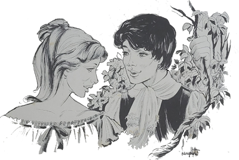
- Desculpe-me! – pediu ela completamente sem jeito. É que andam dizendo . . .
Ficou ofendido e não foi fácil à Ritinha conseguir que ele esquecesse o caso.
O tempo foi passando. Uma sexta-feira, já mais de meia-noite, como estava fazendo um calor insuportável, a Ritinha resolveu sair e ficar sentada no banco que havia perto da porta de entrada. Ficou ali uns minutos. Depois viu qualquer coisa mexer-se no mato em frente e resolveu verificar o que era. Talvez fosse algum bezerro perdido. Não pensou que pudesse ser alguma fera, pois o lugar estava bem povoado e já fazia tempo que não se falava em bicho. Imaginem a surpresa da moça quando um bicho enorme saiu do mato, os dentes arreganhados que dava medo. Embora a Ritinha nunca tivesse visto aquilo, não teve dúvida: era um lobisomem. Quis fugir mas o bicho mordeu-lhe o braço. Sorte que pegou somente o pano da sua blusa vermelha. O pano rasgou, e a Ritinha conseguiu fugir, aos gritos, para dentro de casa. Acordou sua mãe e seu irmão, e ele saiu à procura do lobisomem. Nem sombra. O bicho havia sumido.
No dia seguinte, os dois namorados se encontraram. Quando estavam conversando, ela quase morreu de susto.
- E o que tinha “aconteciudo”, Nhô Zico? – perguntou o Arrelia, com ansiedade.
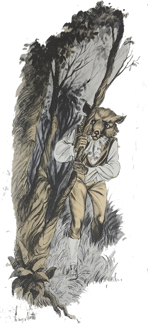
- A moça havia notado um fio de sua blusa entre os dentes do Arlindo.
- Não “diuga”! Então não restava dúvida de que era o lobisomem!
- Não restava mesmo.
Carlinhos comentou em voz baixa mas que dava para ouvir perfeitamente:
- Puxa! O camarada não escovava os dentes!
Nhô Zico fez que não tinha ouvido nada e continuou:
- A moça, Diante daquela prova, não teve mais dúvida e insistiu com ele:
- Quer dizer que o que falam é verdade. Você é um lobisomem!
O Arlindo não teve outro jeito senão contar a verdade. Contou tudo direitinho, disse que não era culpado e que se nada havia contado era porque gostava dela e não queria desmanchar o namoro. Depois, perguntou desesperado:
- Não existirá um modo de quebrar o encanto?
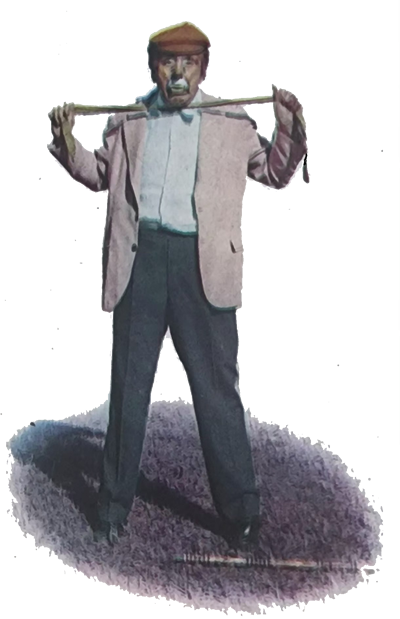
A Ritinha ficou com muita pena do namorado e prometeu que ia procurar um meio de quebrar o encantamento. E assim fez. Perguntou primeiro à sua mãe, depois ao irmão. Nada souberam responder. A partir daquele momento, a Ritinha não fez mais nada a não ser perguntar a quem encontrava: “Conhece um modo de desencantar lobisomem?”
Vários dias se passaram, e a moça não tinha conseguido nenhuma resposta positiva. Finalmente uma velhinha lhe disse:
- Tem um negro velho que mora lé no caminho da Pedreira, chamado Nhô Jerônimo, que conhece o modo de quebrar encantamento de lobisomem. É fácil de encontrar. Fica à esquerda, um pouco antes da pedreira.
A moça agradeceu e voltou correndo à sua casa. Lá, contou aos seus o que havia acontecido. Pediu a permissão à sua mãe e seguiu à procura de Nhô Jerônimo. Não era perto. Encontrou a casa, bateu e foi atendida pelo próprio Nhô Jerônimo, pois que ele morava sozinho. O velho ouviu tudo com atenção e respondeu com uma voz tão vagarosa que dava vontade de dormir:
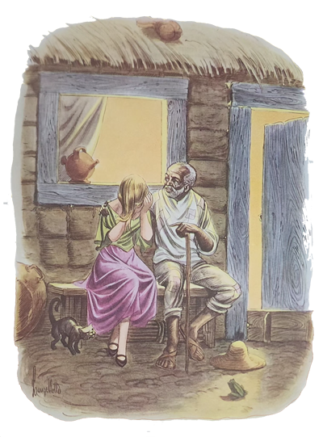
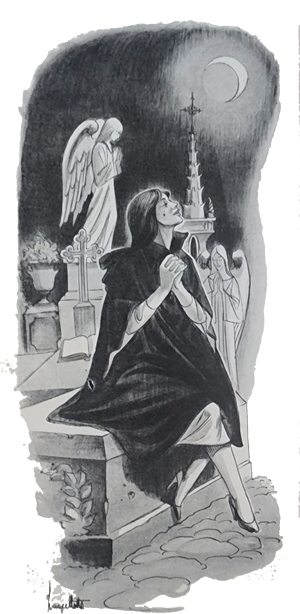
- Só tem um modo de desencantar lobisomem: é dar uma picada nele com um espinho de laranjeira que tenha sido plantada numa sexta-feira à meia-noite. Não se preocupe que tenho aqui o espinho.
Entregou o espinho à moça e continuou:
- Só que para dar certo, a picada tem de ser na hora em que o lobisomem começa a se transformar novamente em homem. E como você deve saber, isto só acontece no cemitério, na madrugada de sexta-feira. Precisa ter coragem, portanto.
A Ritinha arrepiou-se toda e respondeu:
- Vou com meu irmão. Ou ele vai para mim.
- Não! Não! – exclamou o preto velho levantando os braços. Nem fale tal coisa! Você tem de ir sozinha senão o encantamento não se quebrará!
A Ritinha concordou, pois não via outro modo, e tomou o caminho de volta.
Na sexta-feira, logo que anoiteceu, ela foi ao cemitério, sentou-se numa sepultura e ficou a espera. As horas foram-se passando lentamente. Chegou a meia-noite, passou, uma hora, duas, três . . . Às quatro horas a Ritinha viu um vulto proximar-se e entrar no cemitério, que não tem muro. Era o lobisomem. A moça quase desmaiou. Ficou com uma tremedeira . . . O bruto veio chegando, procurou um lugar onde a terra fosse mais fofa e começou a espojar-se. Era a hora. A Ritinha preparou o espinho e, quase desmaiando de medo, correu para o bicho e deu uma catucada nele. O lobisomem soltou um grito horrível e transformou-se no Arlindo. Estava desfeito o encantamento.
Quando a Ritinha lhe contou o que havia acontecido, o Arlindo quase enlouqueceu de alegria. Tinha sido salvo pela dedicação e coragem da namorada. Agora, acho que nem é preciso dizer que houve um casamentão e que vivem até hoje muito felizes.
- É uma estória interessante – disse o Arrelia. Bem imaginada.
- Não é estória, não! – exclamou Nhô Zico. Isso aconteceu mesmo! O senhor não acredita em lobisomem? Pois vai ver depois da meia-noite. Sempre aparece algum.
- Sinto muito – respondeu o Arrelia – mas já vou dormir.
- O quê?! – estranhou Nhô Zico. Não disse que ia esperar?
- Disse – confirmou o Arrelia, levantando-se. Agora, porém, estou com sono e frio.
Nhô Zico olhou-o espantado:
- Com sono, vail á. Mas com frio! Está fazendo um calor de rachar!
- Não está, não – insistiu o Arrelia e olhou para onde as crianças deviam achar-se a fim de convidá-las a também irem dormir. Nenhuma se encontrava mais ali. Todas já tinham entrado.
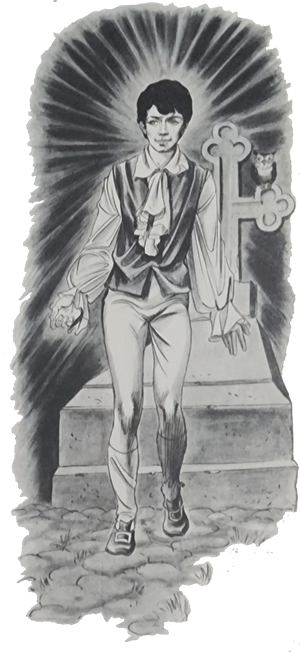